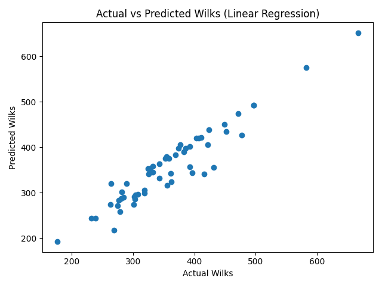
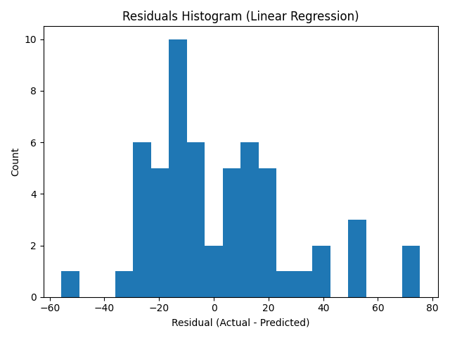
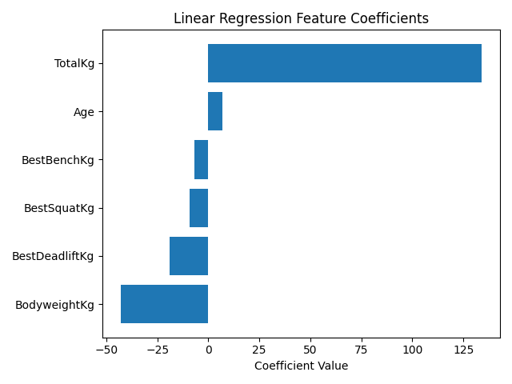

What is Wilks and what are we predicting?
The Wilks score is used in powerlifting to compare lifters across different bodyweights. It adjusts strength performance relative to body mass, so a heavier lifter does not automatically score higher unless their total strength increases proportionally.
Target (What we predict)
Wilks (numeric / continuous) → regression problem.
Why Wilks?
Wilks is more meaningful than TotalKg alone because it accounts for bodyweight and gives a fairer comparison between different weight classes.
Features used (Inputs)
The model uses the following numeric features from the dataset:
- Age
- BodyweightKg
- BestSquatKg
- BestBenchKg
- BestDeadliftKg
- TotalKg (summary of overall performance)
Note: TotalKg was included as a summary performance metric, while the individual lifts allowed the model to capture variations in how strength is distributed across movements.
Model performance
The dataset was split into 80% training and 20% testing. Performance was measured on the test set.
On average, predictions differ from the true Wilks score by about 21 points.
The model explains about 90.4% of the variation in Wilks scores in this dataset.
Visual analysis of results
These charts were generated from the Linear Regression model output.
1) Actual vs Predicted Wilks
Points close to the diagonal line mean the model predicted accurately. A wider spread means larger errors. Overall, the plot shows a strong linear relationship.

2) Residuals Histogram
Residuals are (Actual − Predicted). A good model has residuals centred around 0 with no strong skew. Here, errors are mostly moderate with a few larger mistakes.

3) Feature Coefficients
This chart shows how each feature influences the prediction. A larger absolute value means the feature has more impact. TotalKg is the strongest positive factor, while BodyweightKg is negative, which matches the idea that Wilks adjusts for bodyweight.

Limitations
- The model only uses variables available in the dataset (no training experience, diet, sleep, etc.).
- Linear Regression assumes a linear relationship, so it may miss more complex patterns.
- The dataset size is moderate, and performance may change with a larger sample.